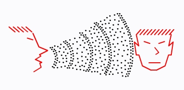
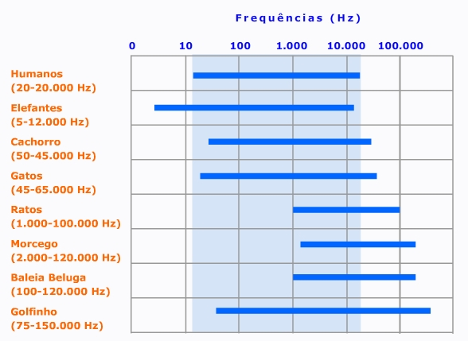
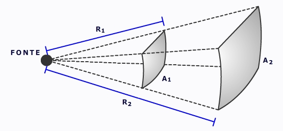
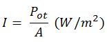
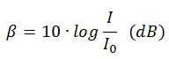
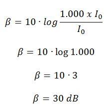

Um som pode ser produzido pelo movimento das cordas vocais, das cordas de um instrumento (violão, violino, etc...) ou por vibrações de qualquer tipo que façam o meio material vibrar. Por ser uma onda longitudinal, o som é uma combinação de áreas de alta pressão (regiões de compressão) seguida de áreas de baixa pressão (regiões de rarefação).
Sendo assim, o som que ouvimos chega a nossos ouvidos, passa pelo tímpano e por outros sistemas, até chegar ao o nervo auditivo, se transformando em informação que chega ao cérebro. O som é um fenômeno físico real, embora sua interpretação seja subjetiva e dependente de fatores relativos a quem está ouvindo (como a aferição de beleza de uma música ou maior ou menor aceitação do tom de voz de uma pessoa).
O que é um som grave? E um som agudo?
Sabemos, do conhecimento do dia a dia, que homens possuem uma voz mais grave que as mulheres e que uma tuba emite sons mais graves que uma flauta. O que produz essa diferença na maneira como percebemos esses sons é a frequência da onda sonora. Quanto maior a frequência da onda sonora, mais agudo percebemos o som, quanto menor a frequência da onda sonora, mais grave percebemos o som
Clique nos botões abaixo para ouvir sons com diferentes alturas.
Observe que o som 01 é mais grave que o som 02. Isso quer dizer que a frequência do som 01 é menor que a frequência do som 02.
Nesse sentido, a altura de um som está associado a sua frequência. Quanto mais alta uma nota musical, maior a sua frequência, e quanto mais baixa uma nota musical, menor a sua frequência.
O ouvido humano é capaz de perceber frequências sonoras entre 20 Hz e 20.000 Hz. Ondas sonoras com frequências abaixo de 20 Hz são chamadas de infrassom e acima de 20.000 Hz são chamadas de ultrassom.
Nem todos os animais ouvem na mesma faixa de frequências que um humano. Cães ouvem sons de alta frequência que são inaudíveis para humanos e elefantes ouvem sons de baixa frequência que também são inaudíveis para humanos. A tabela abaixo ilustra as faixas de frequência percebidas por alguns animais, comparando-as graficamente com o espectro sonoro audível dos humanos.
Embora a velocidade de propagação de uma onda sonora independa da frequência, se percebemos um trio-elétrico ao longe, ouvimos primeiro os sons mais graves para depois ouvirmos os sons mais agudos. Como a velocidade é a mesma, não é uma questão do som grave chegar primeiro do que o som agudo. A questão é que, devido a maior frequência de oscilação das moléculas do meio para um som agudo, a dissipação de energia é maior nesse caso. Assim, um som grave sofre uma menor atenuação a cada metro percorrido, em comparação com um som agudo.
Como consequência, o som de uma buzina de navio é grave, para ser ouvido a grandes distâncias. Segue abaixo um exemplo desse tipo de som.
Vamos ilustrar esse fenônemo utilizando, para fins didáticos, ondas transversais (lembre-se, contudo, que o som é uma onda longitudinal), onde as amplitudes diminuem no decorrer do tempo.
Considere uma fonte sonora que emite som com uma potência P. Como o som é uma onda esférica, ao se propagar, essa potência se distribui sobre a superfície dessa "casca esférica", de tal forma que, com o passar do tempo, a potência para cada valor unitário de área de superfície diminui.
Vamos exemplificar com números:
Então, quando uma onda sonora é emitida por uma fonte, se distanciando dela, sua potência continua a mesma (desprezando a dissipação, que na verdade ocorre...), porém estará cada vez mais distribuída. Por essa razão, quando mais longe estamos da fonte sonora, mais débil é o som.
A razão entre a potência de uma fonte sonora e área da superfície sobre a qual essa potência é distribuída é chamada de Intensidade Sonora.
O sistema auditivo humano só consegue perceber sons com intensidade sonora acima de 10-12 W/m2. Esse valor representa o limiar da audição. Uma intensidade sonora acima de 1 W/m2 já produz forte desconforto fisiológico, sendo esse valor considerado o limiar da dor.
A nossa percepção fisiológica da intensidade sonora não é linear, mas obedece uma escala logaritmica. Para diferenciar essa percepção da intensidade sonora, usamos o nível de intensidade sonora (β), que é calculado como sendo o logaritmo (na base 10) da razão entre a intensidade sonora (I) e o limiar da audição (I0). A unidade de nível de intensidade sonora é o decibel (dB).
Perceba que se a intensidade sonora for igual ao limiar da audição, teremos, na expressão acima, que I = I0. Consequentemente I/I0 = 1 e β = 0 dB.
Assim sendo, β = 0 dB corresponde ao valor a partir do qual um ser humano pode ouvir um som. Se a intensidade I for 100 vezes maior do que I0, não perceberemos nessa mesma proporção, pois, como já foi dito, nossa percepção fisiológica não é linear, mas logarítmica. Nesse caso, perceberemos um valor de 20 dB. E se a intensidade sonora for 1.000 vezes maior do que I0, perceberemos um nível de intensidade sonora de 30 dB.
Veja os cálculos:
A tabela abaixo mostra o nível de intensidade sonora em diferentes ambientes. Importante notar que valores acima de 85 dB produzem danos fisiológicos ao sistema auditivo humano, que aumentam também o com o tempo de exposição.
Já vimos que a velocidade de propagação de uma onda depende das propriedades elásticas e das propriedades inerciais do meio físico. Para o som não é diferente. Consequentemente a velocidade do som é diferente para diferentes meios, como o ar, água ou corpos sólidos (sim, o som se propaga por meios sólidos).
Devido às características específicas desses diferentes meios, o som se propaga mais rapidamente nos sólidos do que na água, e mais rapidamente na água do que no ar.
Uma vez se propagando no ar, quanto maior a temperatura, maior a velocidade de propagação, pois um maior grau de agitação térmica das moléculas facilita a propagação da onda sonora. Isso implica em dizer que se um som se propaga por camadas de ar com diferentes temperaturas, sofrerá variação na sua velocidade. Para os líquidos esse fenômeno também ocorre, sendo pouco relevante nos sólidos, em função da menor alteração sofrida devido a variações de temperatura.
Segue abaixo os valores da velocidade do som nesses três meios, como exemplo.